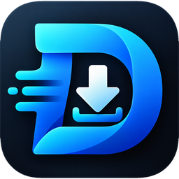

عرض الشاشة
شاهد جهاز الموظف مباشرة أثناء جلسة الدعم.

Downly Remoteابدأ الآناتصل بجهاز الموظف خلال لحظات، شاهد الشاشة وتعامل مع المشكلات مباشرة بعد موافقته. تجربة مألوفة من عائلة Downly.
شاهد جهاز الموظف مباشرة أثناء جلسة الدعم.
استخدم الفأرة ولوحة المفاتيح على أجهزة ويندوز بعد الموافقة.
أرسل ملفًا أو محتوى الحافظة عبر قناة الجلسة المباشرة.
يرى الموظف طلب الاتصال ويمكنه إنهاء الجلسة فورًا.
اختر نظام التشغيل المناسب. الروابط تحمل أحدث إصدار منشور من صفحة الإصدارات.
تنشر الروابط بعد إصدار أول نسخة.
على جهاز الدعم وجهاز الموظف.
يدخل مسؤول الدعم الرقم الظاهر لدى الموظف.
يقبل الموظف مشاركة الشاشة ويمكنه إيقافها في أي لحظة.